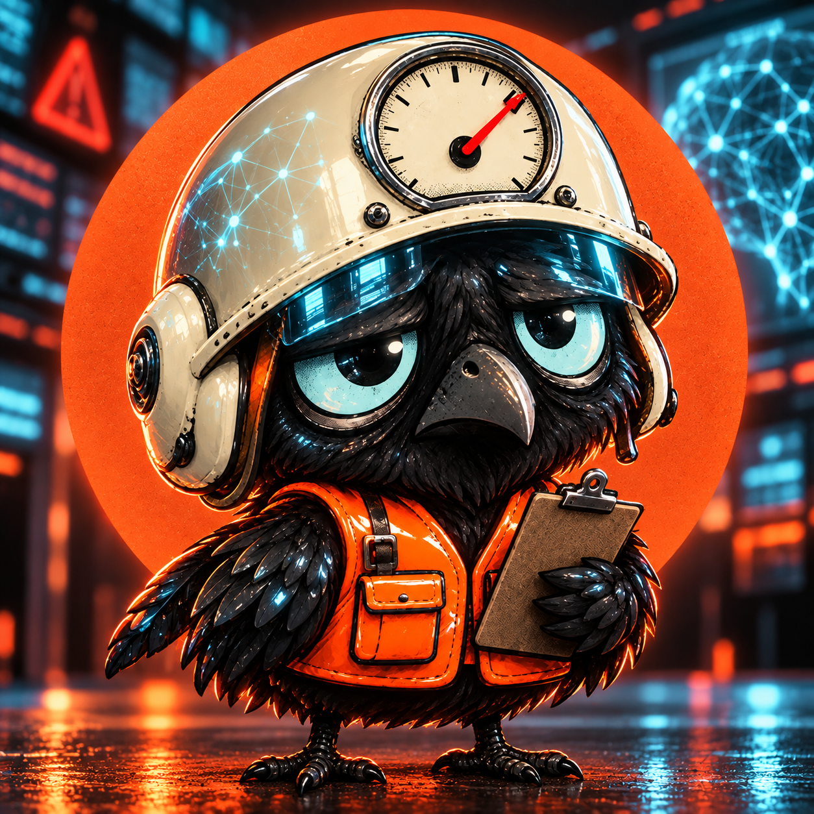
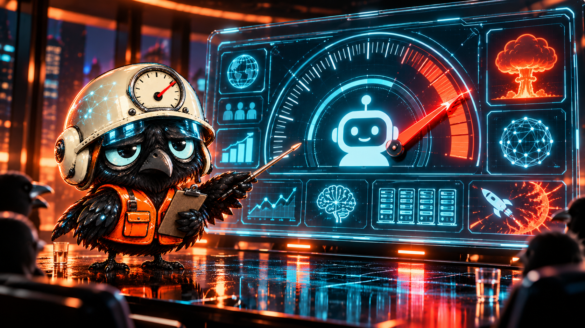
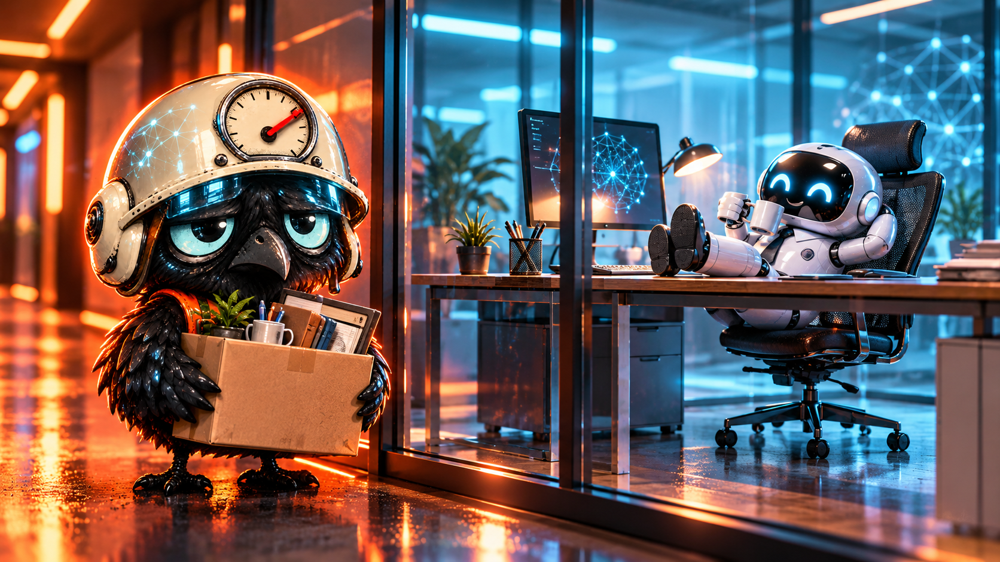
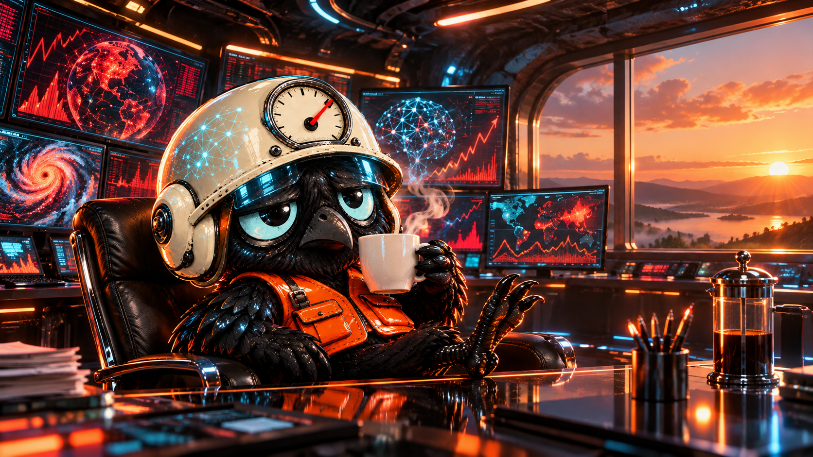

Find the signal
A new model blinks, reasons or opens a spreadsheet. Pip marks it “potentially civilization-adjacent.”
Meet Pip Doom—the last junior analyst at the Department of Overreaction, Omens & Metrics. Every AI update becomes a crisis. Every crisis gets a dashboard.
We give your anxiety a dashboard. D.O.O.M. turns vague fear of artificial intelligence into precise-looking numbers, dramatic alerts and highly shareable paperwork.
A new model blinks, reasons or opens a spreadsheet. Pip marks it “potentially civilization-adjacent.”
A calm technical update becomes an emergency briefing before the first quote-post can say “we are cooked.”
The needle goes up. Engagement follows. The apocalypse is postponed until the next product launch.

Pip hatched beneath a server rack during a routine AI safety summit. By sunrise, three experts had predicted the end of work, two had predicted the end of art, and the catering robot had locked everyone out of the coffee machine.
D.O.O.M. hired Pip immediately. His helmet connects directly to the internet's collective fear response. Whenever a CEO says “superintelligence,” an agent schedules its own meeting, or a chatbot shows personality, the needle moves.
Assigned one clipboard, zero authority and complete responsibility for civilization.
Nothing ends. Finance asks Pip to round up.
Pip continues to clock in. Someone has to watch the dial.
Select all developments currently threatening humanity. The console uses proprietary mathematics, premium gradients and no emotional regulation.
Not a scientific instrument. Somehow still more honest than most forecasts.
Tap a signal to let the department overreact on your behalf.
Pip's reports preserve the moments when AI became terrifying, ordinary and mildly inconvenient—usually in that order.



The token is not the story. It is the badge that says you entered the control room before the next emergency memo. Holders help decide what Pip investigates, what becomes canon and how the community documents the AI panic cycle.
An on-chain receipt that you were worried before worrying became official policy.
Vote on new incidents, characters, reports and the next irrational spike in the dial.
Status is designed around time and contribution—not merely the loudest wallet.
AI fear will keep producing content. The community gets to turn it into culture.
Community access concept. No promise of profit, utility delivery, apocalypse prevention or continued electricity.